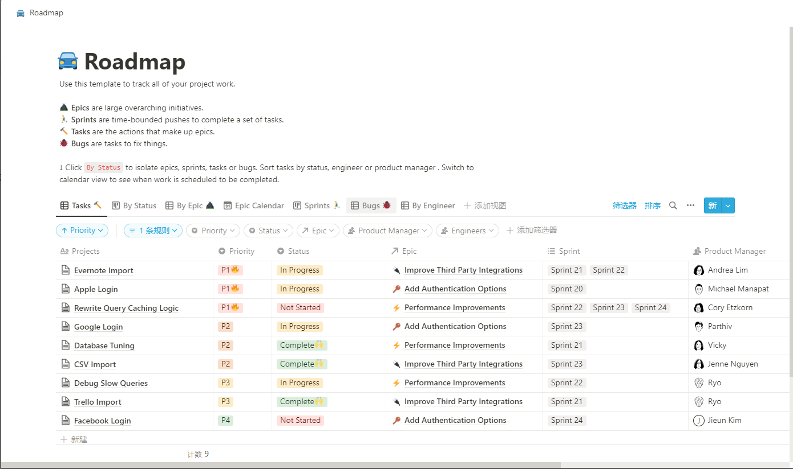
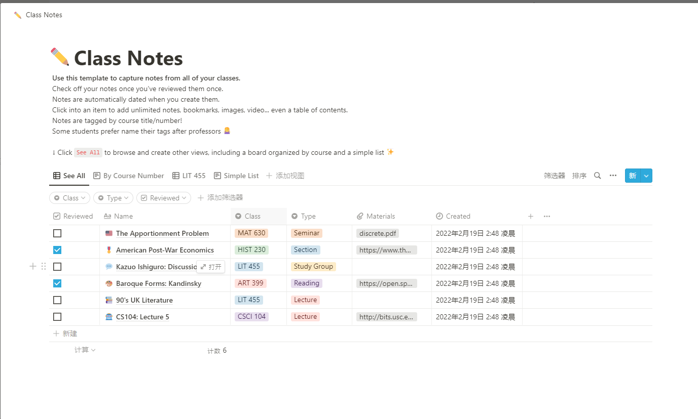
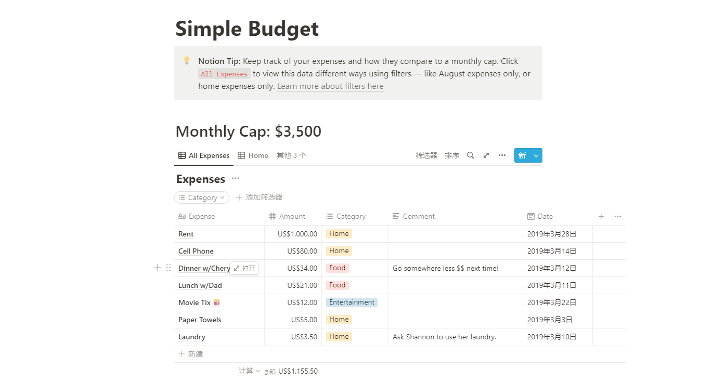
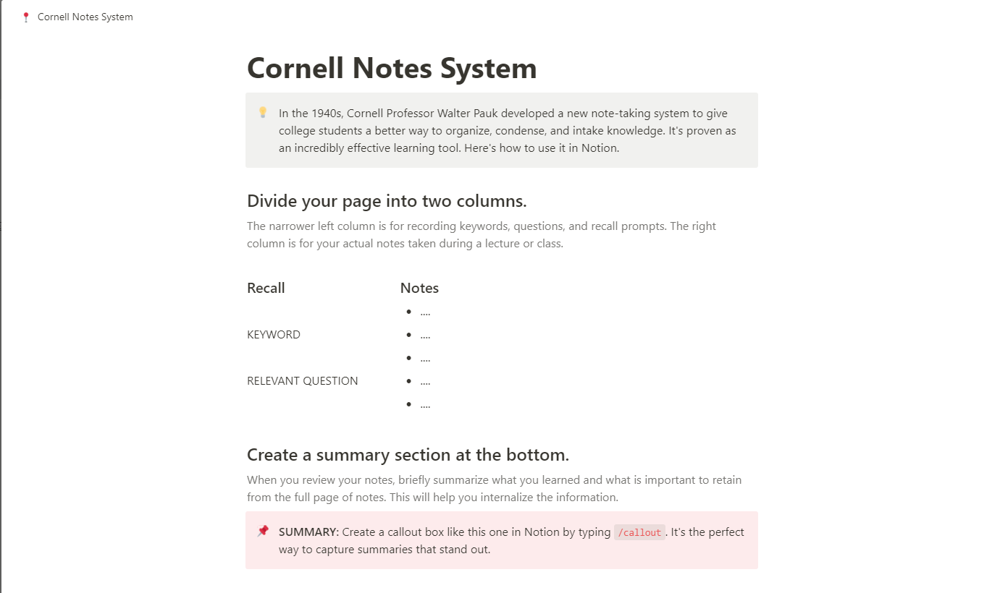

Notion介绍
notion官方地址
Notion是什么
notion是以block为核心设计理念的一款多端笔记软件,被誉为程序员最后一款笔记软件,可以说是一款All in One的协作平台, 兼顾了Word,Trello,Airtable的组合
notion的优缺点
优点
以block为核心的设计观念,搭配无限层级的引用,可以说给notion带来了极大的拓展性质
notion的数据库体系,使得其具有管理规划的功能
优秀的布局排版,美丽简化的界面,可以说是正中程序员的好球区了
自带看板,all in one使得不再需要数据迁移
教育账户免费试用
缺点
服务器在国外,可能会有各种各样的问题
没有原生的悬浮框目录,没有原生的悬浮框目录,没有原生的悬浮框目录
效果展示
   